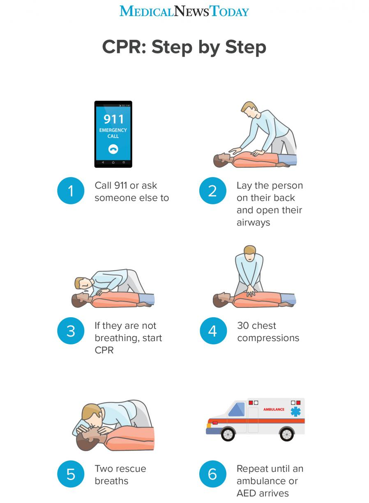

Step 1 - Place the person carefully on their back and kneel beside their chest. Tilt their head back slightly by lifting their chin. Open their mouth and check for any obstruction, such as food or vomit. Remove any obstruction if it is loose. If it is not loose, trying to grasp it may push it farther into the airway.
Step 2 - Place your ear next the person’s mouth and listen for no more than 10 seconds. If you do not hear breathing, or you only hear occasional gasps, begin CPR. If someone is unconscious but still breathing, do not perform CPR. Instead, if they do not seem to have a spinal injury, place them in the recovery position. Keep monitoring their breathing and perform CPR if they stop breathing.
Step 3 - Place one of your hands on top of the other and clasp them together. With the heel of the hands and straight elbows, push hard and fast in the center of the chest, slightly below the nipples. Push at least 2 inches deep. Compress their chest at a rate of at least 100 times per minute. Let the chest rise fully between compressions.
Step 4 - Making sure their mouth is clear, tilt their head back slightly and lift their chin. Pinch their nose shut, place your mouth fully over theirs, and blow to make their chest rise. If their chest does not rise with the first breath, tilt their head. If their chest still does not rise with a second breath, the person might be choking
Step 5 - Repeat the cycle of 30 chest compressions and two rescue breaths until the person starts breathing or help arrives. If an AED arrives, carry on performing CPR until the machine is set up and ready to use.